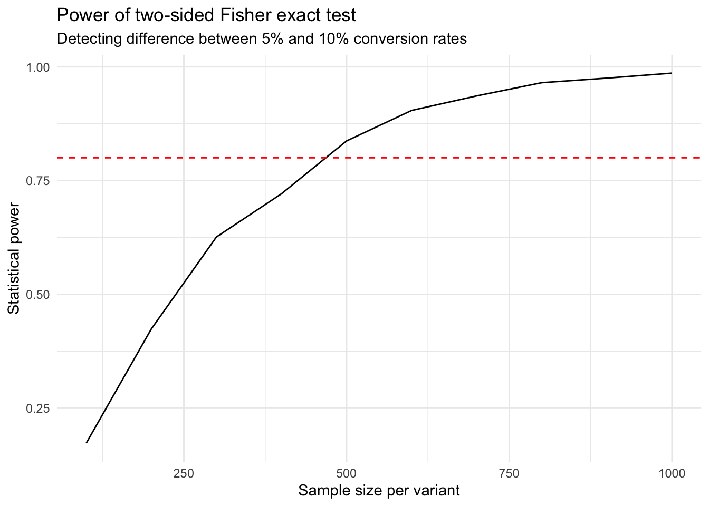

An A/B test is the name given to a randomised experiment to determine which variant, A or B, performs better according to a pre-selected metric. For example consider a website with a call-to-action to download our application. A content marketer may want to try a new, more exciting phrase to encourage users to download the application, but how can you know that this new phrase is driving more downloads? Maybe the development team has implemented new features which are responsible for the growth in users by word-of-mouth, or targeted search engine advertising is delivering more valuable leads.
In this blog post we will show an example of a frequentist null-hypothesis significance testing (NHST) method to answer the question of which variant is best. One advantage of frequentist testing is that it is well-established and widely understood, but it is not without its critics. We will use the Fisher exact test to analyse the results of an A/B test with a conversion metric outcome.
Before diving into the statistical analysis, it’s important to consider the experimental design. An A/B test should be:
Randomized: Users should be randomly assigned to either variant A or B
Controlled: All other factors should remain constant between the two groups
Pre-registered: The success metric should be defined before the experiment begins
Adequately powered: The sample size should be large enough to detect meaningful differences
The Fisher Exact Test
The Fisher exact test is used to determine whether there are nonrandom associations between two categorical variables. In the context of A/B testing with conversion metrics, we’re testing whether the conversion rate differs significantly between variants A and B.
Let’s consider an example where we have the following results:
Outcome
Variant not converted converted
A 95 5
B 80 20
fisher.test(results, alternative ="two.sided")
Fisher's Exact Test for Count Data
data: results
p-value = 0.002197
alternative hypothesis: true odds ratio is not equal to 1
95 percent confidence interval:
1.621308 16.815780
sample estimates:
odds ratio
4.715836
The null hypothesis (\(H_0\)) states that there is no difference in conversion rates between variants A and B. The alternative hypothesis (\(H_a\)) states that there is a difference. The p-value tells us the probability of observing a difference this extreme (or more extreme) if there truly was no difference between the variants. In this case, with a p-value less than 0.05, we would reject the null hypothesis and conclude that variant B has a significantly higher conversion rate than variant A.
Statistical Power
Statistical power is defined as the probability of rejecting the null hypothesis, given that it is false. We can calculate the statistical power using simulation.
Simulate data from a hypothetical experiment \(n\) times
Specify the sample size for each variant, A and B
Specify the true conversion for each variant
Simulate from the Binomial distribution with these parameters
Apply the statistical test to each hypothetical observation and collect the p-values
Determine the proportion of tests which have a p-value below the threshold (usually 0.05)
We can apply this formula to any of the tests we consider in this blog post, we can even re-use the function we use to simulate the data.
power_results %>%ggplot(aes(x = sample_size, y = power)) +geom_line() +geom_hline(yintercept =0.8, linetype ="dashed", color ="red") +theme_minimal() +labs(title ="Power of two-sided Fisher exact test",subtitle ="Detecting difference between 5% and 10% conversion rates",x ="Sample size per variant",y ="Statistical power" )

Determining the required Sample Size
To determine the required sample size we can use a bisection search. We start with a sample size, calculate the power, then adjust the sample size based on the power. We can use optimization to find the sample size which gives us the desired power.
calculate_sample_size <-function(power_target =0.8, n_start =100, tol =0.02, p_a =0.05, p_b =0.10) { max_reps <-50 n <- n_start nlast <-NULL current_power <-calculate_power(sample_size = n, p_a = p_a, p_b = p_b) n_reps <-1while (abs(current_power - power_target) > tol && n_reps <= max_reps) {if (current_power < power_target) { nlast <- n n <-round(1.5* n) } elseif (is.null(nlast)) { nlast <- n n <-round(n /1.5) } else { new_n <-round((n + nlast) /2) nlast <- n n <- new_n } current_power <-calculate_power(sample_size = n, p_a = p_a, p_b = p_b) n_reps <- n_reps +1 }list(sample_size = n, power = current_power, iterations = n_reps)}
The Fisher exact test provides a straightforward method for analyzing A/B test results with conversion metrics. Key takeaways:
Effect size matters: Larger differences between variants require smaller sample sizes to detect
Power analysis is crucial: Calculate required sample sizes before running experiments
Statistical significance ≠ practical significance: A statistically significant result may not be practically meaningful
Other, more common, frequentist methods include the t-test, chi-squared test, and z-test. In the next post I will consider a Bayesian approach to A/B testing.
Citation
BibTeX citation:
@online{law2025,
author = {Law, Jonny},
title = {Using the {Fisher} {Exact} Test for {A/B} {Testing}},
date = {2025-09-14},
langid = {en}
}
For attribution, please cite this work as:
Law, Jonny. 2025. “Using the Fisher Exact Test for A/B
Testing.” September 14.
![]()